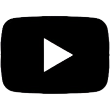
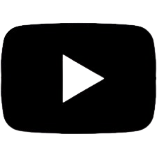

Hoy queremos hablarles sobre la liga deportiva de nuestra escuela, que con el correr de los años se ha transformado en una característica distintiva del Zapata, gracias a la organización del Centro de Estudiantes y a la colaboración de los profes de Educación Física. Actualmente, la liga del Zapata es la más grande entre todas las escuelas de la UNCuyo. Sin embargo, debido a su tamaño, requiere mucho trabajo de parte del Centro de Estudiantes, especialmente de los estudiantes de la Secretaría de Deportes, así como también del apoyo de los directivos.Involucra a más de 150 alumnos por jornada, sin contar a todos los espectadores que asisten para ver los encuentros. Cada año hay un ganador de cada turno, tanto de copa de plata como de copa de oro. O sea que hay 4 ganadores. Además, cada año se entregan premios individuales, por ejemplo: al goleador de cada turno, al jugador más habilidoso, al más rústico, y al arquero con la valla menos vencida. Como dijimos, creemos que la Liga es una de las actividades mas grandes y queridas por la comunidad del Martín Zapata, por ello, vale la pena esforzarse cada año para concretar una nueva edición. La liga es una excelente oportunidad para compartir con amigos, para competir sanamente y sabemos que todo lo que vivimos en cada jornada quedará para siempre en nuestra memoria. ¡Sigamos apoyando la Liga!
InformacionA continuacion, adjuntamos un video el cual brinda informacion sobre La Liga ECMZ
Aca ponemos informacion cualquiera
Aca ponemos informacion cualquiera